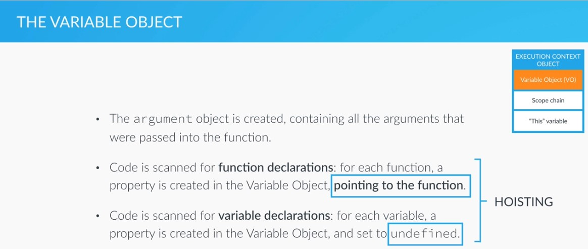

Section 3: How JavaScript Works Behind the Scenes
SIMPLE: podamos usar una función antes de declararla, debido a la forma en que el Variable Object (VO) es construído por el Execution Context Object, como se muestra en la imágen
Hositing no funciona con function expressions, porque son tratadas como variables, es decir, se inicializan con undefined
